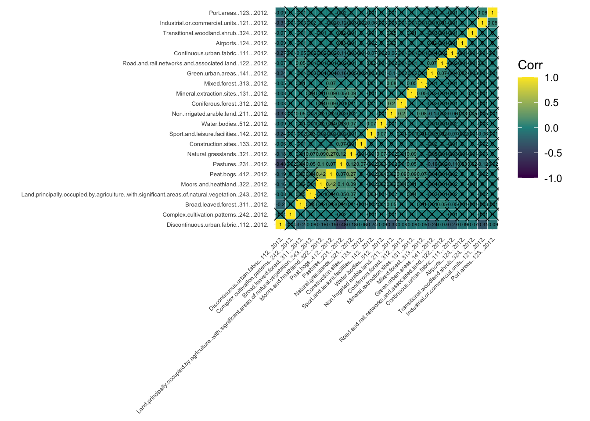

3.2.1 Demographic data for Greater London Authority
In this Chapter we will be looking at data provided by London Datastore, a website created by the Greater London Authority (GLA) to distribute openly and freely London’s data. In particular, we have prepared the file lsoa-data-clean.csv based on the LSOA Atlas, which contains demographic and related data for each Lower Layer Super Output Area (LSOA) in Greater London.
LSOAs are geographic hierarchies designed to improve the reporting of small area statistics in England and Wales. LSOAs are built from groups of contiguous Output Areas (OAs) and have been automatically generated to be as consistent as possible in population size, with a minimum population of 1,000. For this reason, their spatial extent varies depending on how densely populated a region is. The average population of an LSOA in London in 2010 was 1,722.
3.2.2 Import the data
In the code chunk below we load the dataset described above, lsoa-data-clean.csv as a data frame and call it df_LSOA. We will be generating some maps to show the geographical distribution of our data and results. To do this, we need the data that defines the geographical boundaries of the LSOAs. This data can be found in the form of a shapefile here. We have also stored this shapefile, called LSOA_2011_Lodnon_gen_MHW.shp, in the data folder of this workbook so you can import it directly as a data frame with simple features using the st_read() function from the sf package. For more information on the sf package, check the documentation.
# Import LSOA demographic data for GLA# The raw data can be obtained from link below, but it has been cleaned by Carmen Cabrera-Arnau for this chapter# https://data.london.gov.uk/dataset/lsoa-atlasdf_LSOA <-read.csv("./data/geodemographics/lsoa-data-clean.csv")# Import LSOA boundaries for GLAst_LSOA <-st_read("./data/geodemographics/LSOA_2011_London_gen_MHW/LSOA_2011_London_gen_MHW.shp")
Reading layer `LSOA_2011_London_gen_MHW' from data source
`/Users/franciscorowe/Dropbox/Francisco/uol/teaching/envs418/202223/r4ps/data/geodemographics/LSOA_2011_London_gen_MHW/LSOA_2011_London_gen_MHW.shp'
using driver `ESRI Shapefile'
Simple feature collection with 4835 features and 14 fields
Geometry type: MULTIPOLYGON
Dimension: XY
Bounding box: xmin: 503574.2 ymin: 155850.8 xmax: 561956.7 ymax: 200933.6
Projected CRS: OSGB36 / British National Grid
3.3 Geodemographic classification
Geodemographics is the statistical study of human populations based on their locations. It includes the application of geodemographic classifications (GDCs) or profiling whereby different locations are classified into groups based on the similarity in their demographic characteristics.
Assuming that the geodemographic characteristics of a group are an indicator of how the people in that group behave, GDC can be a very useful tool to predict the behavioral patterns of different regions. For this reason, geodemographics and GDC have applications in many areas, from marketing and retail to public health or service planning industries.
3.4 Preparing the data for GDC
3.4.1 Choice of geographic units
Normally, GDCs involve the analysis of aggregated demographic data into geographic units. Very small geographic units of data aggregation can provide more detailed results, but if the counts are too low, this could lead to re-identification.
As mentioned above, the data for this chapter is aggregated into LSOAs. The size of the LSOAs is small enough to produce detailed results and is also a convenient choice, since it is broadly used in the UK Census and other official data-reporting exercises.
We can visualise the LSOAs within GLA simply by plotting the geometry column of sf_LSOA, which can be selected with the function st_geometry().
Any classification task must be based on certain criteria that determines how elements are grouped into classes. For GDC, these criteria are demographic characteristics of the population located in the geographic units under study. In this case, we have prepared the file lsoa-data-clean.csv to contain some interesting demographic data corresponding to each LSOA. The data frame df_LSOA contains this data and we can visualise its first few lines by using the function head():
As we can see, each row contains information about an LSOA and each column (starting from the third column) represents a demographic characteristic of the LSOA and the people living there. With the function names(), we can get the names of the columns in df_LSOA
The data frame df_LSOA contains many variables. As we can see above, they have summarised names. For a short description of what these names mean, we can load the file called Dictionary-lsoa-data-clean.csv:
Name Description X X.1 X.2
1 LSOA11NM Name of LSOA NA NA NA
2 MidYearPop Mid-year Population Estimates;All Ages;2011 NA NA NA
3 MidYearPopAge0to15 Mid-year Population Estimates;Aged 0-15;2011 NA NA NA
4 MidYearPopAge16to29 Mid-year Population Estimates;Aged 16-29;2011 NA NA NA
5 MidYearPopAge30to44 Mid-year Population Estimates;Aged 30-44;2011 NA NA NA
6 MidYearPopAge45to64 Mid-year Population Estimates;Aged 45-64;2011 NA NA NA
X.3 X.4 X.5 X.6
1 NA NA
2 NA NA x
3 NA NA x
4 NA NA x
5 NA NA x
6 NA NA x
For the purposes of this chapter, we will focus on just a few of these variables since this will make the results easier to interpret. In particular, we will look at variables related to ethnicity, country of birth, employment status and qualifications. Let us select the fields of interest:
We can explore the summary statistics for each of the selected fields with the sumary() function applied on the field of interest. For example, to obtain the summary statistics for the percentage of people belonging to the ethnic group ‘Black/African/Caribbean/Black British’, we can run the code below:
Min. 1st Qu. Median Mean 3rd Qu. Max.
0.10 4.30 9.50 13.05 18.90 63.70
This tells us that the mean or average percentage of people from this ethnic group in LSOAs within GLA is 13.05%. It also tells us that 63.70% of the population are Black/African/Caribbean/Black British in the LSOA with the maximum proportion of people belonging to this ethnic group.
To visualise the whole distribution of the variable ‘Percentage of Black/African/Caribbean/Black British’, we can plot a histogram:
hist(df_LSOA$EthnicBlackAfricanCaribbeanBlackBritish, breaks=50, xlab="% Black/African/Caribbean/Black British", ylab='Number of LSOAs', main=NULL)
The histogram reveals that many LSOAs have a low proportion of Black/African/Caribbean/Black British people, but there are a few with more than 50% of their population belonging to this ethnic group.
Now the question is whether the LSOAs with similar proportions of Black/African/Caribbean/Black British are also spatially close. To find out, we need to map the data. We can do this by joining the data frame df_LSOA with the data frame st_LSOA which contains the geographic boundaries of the LSOAs:
If we plot the joined data frames, we can observe that, indeed there are specific regions within GLA with a high proportion of Black/African/Caribbean/Black British people.
join_LSOA %>%ggplot(aes(fill=EthnicBlackAfricanCaribbeanBlackBritish, color = EthnicBlackAfricanCaribbeanBlackBritish)) +geom_sf() +scale_fill_viridis(direction =1, name="Black/African/Caribbean/\nBlack British people") +scale_color_viridis(direction =1, name="Black/African/Caribbean/\nBlack British people")

3.5 Standardisation
3.5.1 Across geographic units
Although LSOAs have been designed to have similar population sizes, the population figures flucuate. And of course, if the population of a place is bigger or smaller, this can affect the figures corresponding to demographic characteristics (e.g. presumably, the larger the total population, the higher the number of people who are unemployed).
To counter the effect of variable population sizes across geographic units, we always need to standardise the data so it is given as a proportion or a percentage. This has already done in the dataset lsoa-data-clean.csv, however, if you were to create your own dataset, you need to take this into account. To compute the right percentages, it is important to consider the right denominator. For example, if we are computing the percentage of people over the age of 65 in a given geographic unit, we can divide the number of people over 65 by the total population in that geographic unit, then multiply by 100. However, if we are computing the percentage of single-person households, we need to divide the number of single-person households by the total number of households (and not by the total population), then multiply by 100.
3.5.2 Of variables
Data outliers are often present when analysing data from the real-world. These values are generally extreme and difficult to treat statistically. In GDC, they could end up dominating the classification process. To avoid this, we need to standardise the input variables as well, so that they all contribute equally to the classification process.
There are different methods for variable standardisation, but here we will achieve this by computing the Z-scores for each variable, i.e. for variable \(X\), Z-score = \(\dfrac{X-mean(X)}{std(X)}\) where \(std()\) refers to standard deviation. In R, obtaining the Z-score of a variable is very simple with the function scale(). Since we want to obtain the Z-scores of all the variables under consideration, we can loop over the columns corresponding to the variables that we want to standardise:
# creates a new data framedf_std <- df_LSOA# extracts column names from df_stdcolnames_df_std <-colnames(df_std)# loops columns from position 1 : the last columnfor(i in2:ncol (df_std)){df_std[, colnames_df_std[i]] <-scale(as.numeric(df_std[, colnames_df_std[i]]))}
3.6 Checking for variable association
# Matrix of Pearson correlation coefficientscorr_mat <-cor(df_std[,c(colnames_df_std[2:ncol(df_std)])], method ="pearson")# Matrix of p-valuescorr_pmat <-cor_pmat(df_std[,c(colnames_df_std[2:ncol(df_std)])], method ="pearson")# Barring the no significant coefficientggcorrplot(corr_mat, tl.cex=10, hc.order =TRUE, outline.color ="white", p.mat = corr_pmat, colors =c(viridis(3)))
join_data_cluster %>%ggplot(aes(fill=cluster, color = cluster)) +geom_sf() +scale_fill_viridis(direction =1) +scale_color_viridis(direction =1)
3.7.2 Number of clusters
3.7.3 Other clustering methods
3.8 GDC results
3.8.1 Cluster interpretation
# creates a radial plot for the first group [1,]# the boxed.radial (False) prevents white boxes forming under labels# radlab rotates the labelsKmCenters <-as.matrix(Km$centers)KmCenters <-as.data.frame(KmCenters)radial.plot(KmCenters[1,], labels =colnames(KmCenters), cex=0.1,boxed.radial =FALSE, show.radial.grid =FALSE,line.col ="blue", radlab =TRUE )